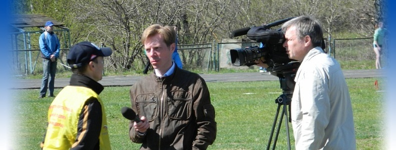

|  | |
 | |
 |
|
На прошедшем сегодня заседании Кировской Областной Федерации Лёгкой Атлетики было решено присвоить этому ресурсу статус Офицального сайта КОФЛА. Хочется выразить огромную благодарность Алексею Николаевичу Трушкову за поддержку в процессе решения данного вопроса. В связи с этим, в ближайшее время планируется провести следующие мероприятия:
|
| В эти выходные пройдут Областные традиционные соревнования по легкоатлетическим многоборьям памяти ЗМС Григория Дегтярёва.По данному старту доступны следующие материалы:
| |
| Со 2 по 4 марта в Саранске проходило Первенство России среди молодёжи по лёгкой атлетике. Лучше всех из кировских спортсменов выступили Горохов Константин, занявший 6 место на дистанции 60 метров с барьерами, и Лютин Дмитрий, занявший 10 место в беге на 60 метров. | |
| С 10 по 11 марта в манеже "Прометей" города Кирова пройдут соревнования памяти Заслуженного мастера спорта Григория Григорьевича Дегтярева. На этих соревнованиях в многоборьях будут участвовать спортсмены младшего, среднего и старшего возраста. Судейская по соревнованиям пройдёт в пятницу, поэтому программа соревнований и стартовые протоколы появятся ближе к вечеру пятницы. | |
| С 28 февраля по 1 марта в городе Пенза проходили Всероссийские соревнования по лёгкой атлетике среди юношей и девушек 1997-1998 годов рождения. Сборная команда Кировской области в составе Белостоцкой Елены, Кудрявцевой Юлии, Цаплиной Валерии и Соколовой Анны стала победительницей соревнований на дистанции 4 по 200 метров. Кроме того, Соколова Анна стала серебрянным призёром в беге на 400 метров. | |
| Сегодня состоялась торжественная закладка камня на месте будующего строительства легкоатлетического манежа в заречной части города Кирова. На мероприятии учавствовали заслуженные мастера спорта и мастера спорта международного класса по легкой атлетике из Кировской области, а также различные политические деятели, включая губернатора области. Был озвучен планируемый срок строительства объекта - 1-1,5 года. | |
| 29 февраля - 1 марта в манеже "Прометей" пройдут 7-е Детские спортивные игры Кировской области. По данному старту доступны следующие материалы: | |
| Завтра утром уезжают в Пензу на Первенство России среди юношей и девушек среднего возраста спортсмены и представители команды Кировской области. Пожелаем им удачи и высоких результатов. В среду, 29 февраля, в легкоатлетическом манеже Прометей, начнутся детские игры учащихся, в которых примут участие спортсмены в возрастных категориях до среднего возраста. Более подробная информация о данном старте будет обнародована после судейской, которая пройдёт в понедельник, 27 февраля. | |
| Составлен рейтинг спортсменов на видах спортивной программы, по показанным на данный момент результатам в зимнем сезоне 2012 года. | |
| 18-19 февраля в манеже "Прометей" пройдёт Зимний Чемпионат города Кирова по лёгкой атлетике. По данному старту доступны следующие материалы: | |
| На Первенстве России среди юниоров, прошедшем в Волгограде 10-12 февраля, Ивонина Екатерина заняла 2 место на дистанции 2000 метров с препятствиями, показав результат 6.46,97, тем самым выполнив норматив кандидата в мастера спорта в этом виде лёгкой атлетики. Поздравляем и желаем дальнейших успехов. | |
| Переделаны шапки всех страниц на сайте. Надеюсь новый внешний вид и отсутсвие в нём личных материалов автора сайта придется по вкусу всем. Жду предложений по расширению функциональных возможностей сайта. | |
| Поздравляю всех легкоатлетов с Днём всех влюбленных. Желаю любить и быть любимыми. (офтоп) Просьба откликнуться желающих принять участие в переделке сайта, которая включает в себя визуальную и функциональную составляющую. Переделана шапка вкладки Информация. Если данный вариант удовлетворит всех, то в таком стиле в ближайшие дни будут переделаны все вкладки. Касательно функциональной составляющей, переделки в ближайшее время не предвидятся, так как с точки зрения автора, здесь выложена самая необходимая и востребованная информация. Всех желающих высказать своё конструктивное мнение по изменениям на сайте, предложить картинки по оформлению вкладок или просто оставить отзыв, просьба писать Вконтакте. | |
| 11-12 февраля в манеже "Прометей" пройдёт Чемпионат Кировской области по лёгкой атлетике. По данному старту доступны следующие материалы: | |
| После тестирования сайта на мониторах с большим разрешением, была передалелана разметка сайта. Также были добавлены несколько протоколов последних соревнований. Ресурс временно выложен на личный сайт автора. В дальнейшем планируется найти нормальный хостинг и переместить туда этот ресурс. Требуется одна-две красивых фотографий для замены имеющихся на странице новостей, с целью уменьшения количества личных материалов создателя сайта, обилие которых может раздражать посетителей. | |
| Интернет ресурс полностью реализон. Все поставленные цели по разработке на первое время выполнены. В случае востребованности ресурса возможно графическое улучшение и расширение функционала. Загружены имеющиеся протоколы соревнований за зимний сезон 2012 года. В ближайшее время сайт будет выложен в интернет и доступен всем желающим. | |
| Определена структура, общий вид интерфейса и моделей взаимодействия с пользователем. Начата разработка данного сайта. Основными целями данного информационного ресурса являются: |